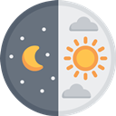

<head>
    <script>
        var yourUrl = 'https://api.warframestat.us/pc/cetusCycle'

        function Get(yourUrl) {
            var Httpreq = new XMLHttpRequest();
            Httpreq.open("GET", yourUrl, false);
            Httpreq.send(null);
            return Httpreq.responseText;
        }
        var dnTime = JSON.parse(Get(yourUrl));
        var dd = new Date(Number(dnTime.id.substr(10, dnTime.id.length)) - (60 * 1000) * 0);
        var date = new Date();
        var nexttime = new Date(dd - date);

        var expire = date.getTime() > dd.getTime() ? true : false


        function d(num) {
            if (num == 0) {
                return ''
            } else {
                return ':'
            }
        }

        var temp_min = "";
        var temp_h = "";
        var t_id = dnTime.isDay ? "낮" : "밤";
        var temp_time = "";
        var temp_sec = "";
        setInterval(function () {
            expire = date.getTime() > dd.getTime() ? true : false
            date = new Date()
            var nexttime = new Date(dd - date)

            if (expire && t_id == "낮") {
                expire = false
                t_id = "밤"
                dd = new Date(dd.getTime() + (1000 * 60) * 50)
            }
            if (expire && t_id == "밤") {
                expire = false
                t_id = "낮"
                dd = new Date(dd.getTime() + (1000 * 60) * 100)
            }
            temp_h = nexttime.getHours() - 9 == 0 ? '' : nexttime.getHours() - 9 + 'h '
            temp_sec = nexttime.getSeconds()
            temp_min = nexttime.getMinutes() == 0 ? '' : (nexttime.getMinutes()) < 10 ? '0' + nexttime.getMinutes() :
                nexttime.getMinutes();
            temp_sec = nexttime.getSeconds() < 10 ? "0" + nexttime.getSeconds() : nexttime.getSeconds()
            temp_time = temp_h + temp_min + d(nexttime.getMinutes()) + temp_sec;
            document.getElementsByTagName("title")[0].innerText = t_id + ' ' + temp_time
            document.getElementsByTagName("span")[0].innerText = temp_time
            var link = document.querySelector("link[rel*='icon']") || document.createElement('link');
            link.type = 'image/x-icon';
            link.rel = 'shortcut icon';
            if (t_id == "낮") {
                link.href = './img/day.png'
                document.getElementById('cetusico').setAttribute("src", './img/day.png')
            }
            if (t_id == "밤") {
                link.href = './img/night.png'
                document.getElementById('cetusico').setAttribute("src", './img/night.png')
            }
            document.getElementsByTagName('head')[0].appendChild(link);


        }, 1000)

        var dpcheck = true
        var bang = setInterval(() => {
            var waring = true

            if (t_id == "낮" && Number(temp_min) > 9 && temp_h !== '1h ' && dpcheck == true) {
                document.body.style.display = "none"
                waring = true
            }
            if (t_id == "낮" && Number(temp_min) > 4 && Number(temp_min) < 10 && temp_h !== '1h ' && dpcheck ==
                true) {
                document.body.style.display = ""
                waring = true
            }

            if (t_id == "낮" && Number(temp_min) < 5 && Number(temp_min) > 0 && temp_h !== '1h ') {
                document.getElementById("bgdiv").style.backgroundColor = 'rgb(244, 67, 54)'
                document.body.style.display = ""
                waring = true
            }
            if (t_id == "낮" && Number(temp_min) < 1 && temp_h !== '1h ') {
                if (waring) {
                    document.getElementById("bgdiv").style.backgroundColor = 'rgb(244, 67, 54)'
                    waring = false
                }
                setTimeout(() => {
                    if (!waring) {
                        document.getElementById("bgdiv").style.backgroundColor = ''
                    }
                }, 1000);
            }


            if (t_id == "낮" && Number(temp_min) == 5 && Number(temp_sec) == 0) {
                var TeralystSound = new Audio(
                    'https://dneifiend.github.io/storage/warframe/sound/warframe_Teralyst_sound.mp3');
                TeralystSound.play();
            }
        }, 2000);


        document.write(
            `
            <head>
                <title></title>
                <link href="https://fonts.googleapis.com/css?family=Muli:900" rel="stylesheet">
                <meta http-equiv="Expires" content="${dnTime.expiry}">
                <style>
                span{ font-family: 'Russo One', sans-serif}
                </style>
                </head>
                <body style="background-color: rgba(0,0,0,0)">
                
                <div id="bgdiv" style="bgcolor: rgba(255,0,0,0); border-radius: 10px; padding: 0 12px; display: inline-block"><span id="cetus" style="font-size: 50px; vertical-align: middle;font-family: 'Muli', sans-serif; color: white"></span>
                </div>
                </body>
                `
        )

        function f() {
            document.body.requestFullscreen().then(() => {
                document.body.style.display = ""
                dpcheck = false
                var bodystyle = document.body.style
                bodystyle.backgroundColor = "rgba(0,0,0,1)";
                document.getElementsByTagName('span')[0].style.fontSize = '17rem'
                document.getElementById("cetusico").style.width = "228px";
                bodystyle.paddingTop = '19%'
                bodystyle.textAlign = 'center'
            })
        }
    </script>
</head>